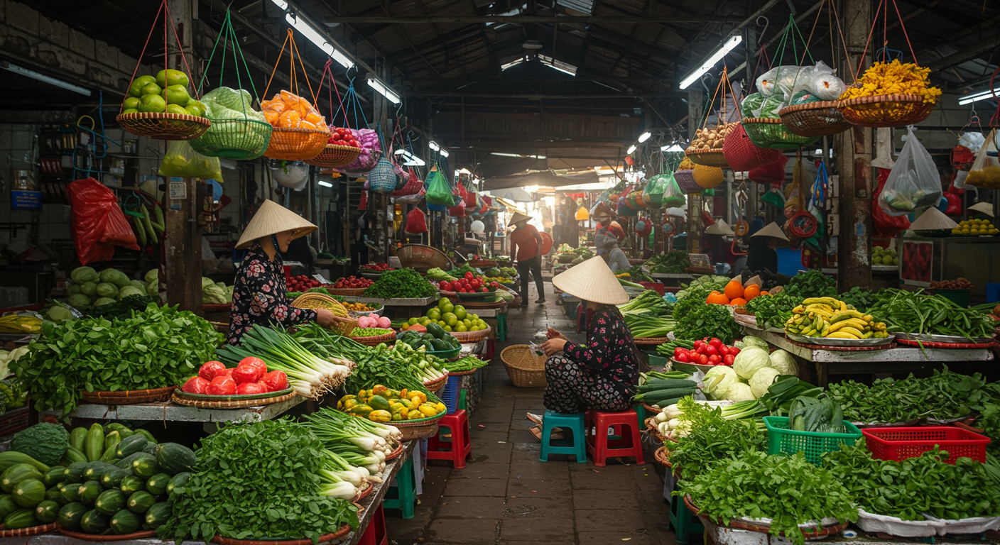

베트남 전통시장 탐방

현지인들의 일상이 생생하게 담긴 베트남의 전통시장. 다채로운 색과 향, 소리가 어우러진 시장에서 베트남의 진정한 모습을 만나보세요.
하노이의 대표 시장
1. 동쑤안 시장 (Dong Xuan Market)
하노이 최대 규모의 도매 시장입니다. 의류, 식재료, 생활용품 등 다양한 상품을 저렴하게 구매할 수 있습니다.
- 위치: Dong Xuan Street, Hoan Kiem
- 영업시간: 06:00 - 19:00
- 특징: 4층 건물의 대형 실내 시장
2. 호안끼엠 시장
호안끼엠 호수 근처의 전통시장으로, 현지 식재료와 음식을 만날 수 있습니다.
- 위치: Hang Be Street, Hoan Kiem
- 영업시간: 05:00 - 18:00
- 특징: 신선한 식재료와 현지 음식
시장 구경 팁
-
방문 시간
이른 아침(6-8시)에 방문하면 가장 신선한 식재료를 볼 수 있습니다.
-
흥정하기
첫 가격의 50-70% 선에서 흥정하는 것이 일반적입니다.
-
사진 촬영
상인들의 동의를 구한 후 촬영하는 것이 예의입니다.
추천 구매 품목
1. 식재료
- 신선한 열대과일
- 향신료
- 베트남 커피
- 건해산물
2. 기념품
- 전통 모자(논라)
- 수공예품
- 비단 제품
- 전통차
시장 음식 추천
-
반미
시장 안에서 만드는 신선한 반미는 특별한 맛을 자랑합니다.
-
연유커피
시장 카페의 정통 베트남 커피를 즐겨보세요.
-
분짜
시장 식당의 분짜는 현지인들이 즐겨 찾는 메뉴입니다.
주의사항
시장은 매우 붐비므로 소지품 관리에 주의하세요. 식재료 구매 시에는 가급적 현지인들이 많이 찾는 가게를 이용하는 것이 좋습니다. 더운 날씨에는 물을 충분히 준비하고, 편한 신발을 신고 방문하세요.